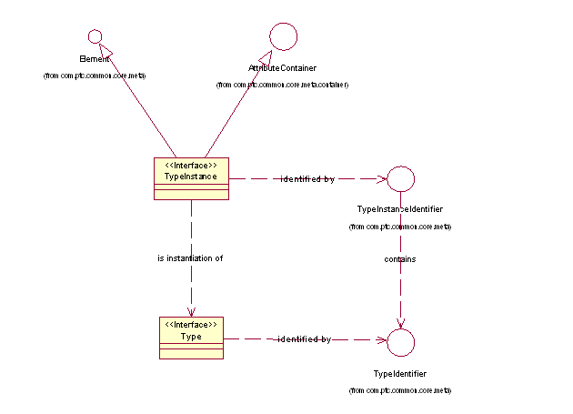

| Interface | Description |
|---|---|
| Type |
Supported API: true Extendable: false |
| TypeInstance |
Supported API: true Extendable: false |
Type Instance
The mostly commonly manipulated meta item is the Element item for a Type, the Type Instance. It represents a basic object with attributes and associations to other objects. TypeInstances will be retrieved from services and other selection components, the attributes and associations on those TypeInstances will be manipulated and modified, and the TypeIntances will be passed on to other services and components for actions to be applied to them. In general, new TypeInstances will only be constructed by dedicated construction services that will map various sources of meta data and true data into the TypeInstance format.
